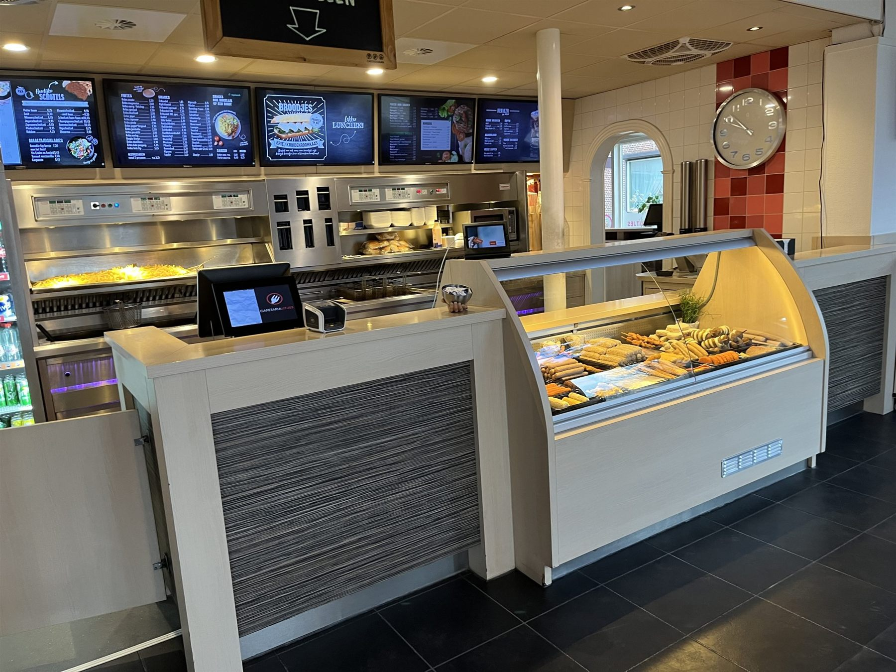
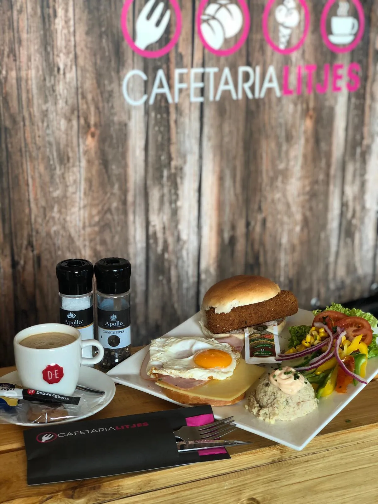
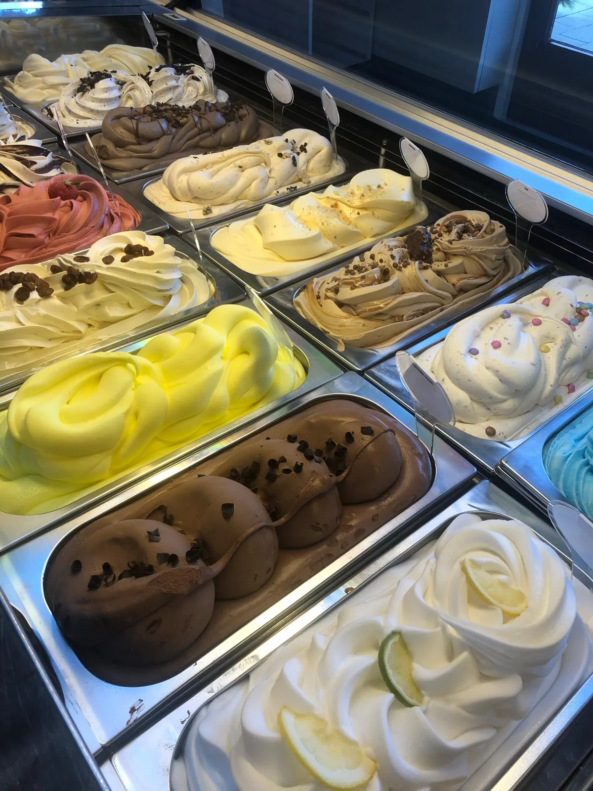
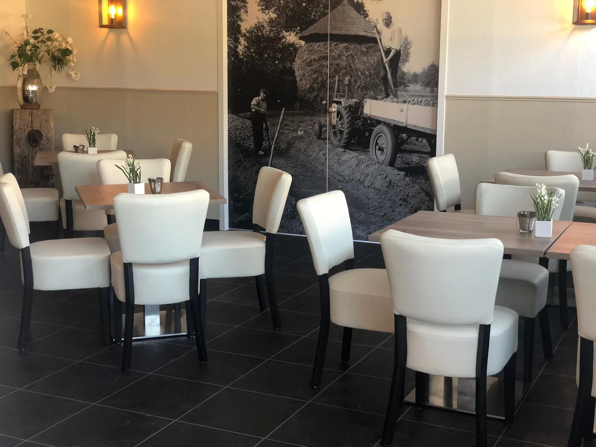

De cafetaria
Een ruime keuze aan snacks, snitzels, hamburgers, halve hanen en natuurlijk een ruim aanbod aan vegetarische producten. Onze frites hebben een goede reputatie in de regio.
Naar snacks en schotels
Elke dag open van 11.00 tot 00.00 uur
Van vleeskroket tot halve haan, van broodje gezond tot ambachtelijk Italiaans schepijs. Bestel telefonisch vanaf 9 uur of online, of schuif aan: binnen hebben we 80 plaatsen en op het terras 100.
Cafetaria Litjes is bijna 40 jaar een begrip in 's-Heerenberg en omstreken. Door de jaren heen is er steeds verbouwd en uitgebreid. Dit vindt u bij ons onder één dak.
Een ruime keuze aan snacks, snitzels, hamburgers, halve hanen en natuurlijk een ruim aanbod aan vegetarische producten. Onze frites hebben een goede reputatie in de regio.
Naar snacks en schotels
De lekkerste broodjes, salades, juices en smoothies, vers gemaakt. Met verrassende combinaties, en uitgebreid met een breed assortiment verse smoothies.
Naar de broodjes
Puur ambachtelijk Italiaans schepijs: altijd vers, met veel passie gemaakt volgens Italiaans recept, met alleen natuurlijke ingrediënten. Verder softijs, milkshakes, ijsshuffels met toppings en slushpuppy's.
Naar ijs en drinken
Sinds we café 't Olde Veld erbij hebben genomen, zijn er binnen 80 zitplaatsen. Het terras is verdubbeld naar 100 plaatsen. Lekker even zitten dus.
Naar openingstijden en adresUit het cafetaria, de broodjeshoek en de ijshoek. Prijzen in euro.
Liever gebakken aardappelen in plaats van frites? Meerprijs 1,25.
Liever een donkere baguelino, flaguette of ciabatta? Meerprijs 0,85.
Smaken en prijzen van ijs, smoothies en drinken ziet u in de zaak.
Bestellen kan telefonisch vanaf 9 uur via 0314-663691, of online:
Het begon met pa Tonnie en ma Leonie Litjes en een frietwagen op de markt. Inmiddels staan dochter Nancy en haar partner Jurgen met hun team 7 dagen per week voor u klaar.
Tonnie en Leonie Litjes beginnen samen met een frietwagen op diverse markten.
Een oude supermarkt aan de Lengelseweg wordt verbouwd tot een voor die tijd hypermoderne cafetaria. De opening op 28 februari, met drie uur lang gratis friet, groeit uit tot een 's-Heerenbergs evenement: de politie moet helpen om het publiek in goede banen te leiden.
Nancy komt bij vader en moeder in de zaak werken. Zus Joyce volgt in 1994.
Na de aankoop van het pand aan de Oude Doetinchemseweg in 1998 en een grondige verbouwing gaat de nieuwe cafetaria in maart open. Eind 1999 volgt café 't Olde Veld, waar ma Leonie en Joyce de scepter zwaaien.
De ijshoek komt erbij. Eindelijk is er ambachtelijk Italiaans schepijs te krijgen in 's-Heerenberg.
Een make-over in september geeft de zaak het uiterlijk van nu.
In januari nemen Nancy en partner Jurgen de zaak over van pa en ma.
Met de ruimte van 't Olde Veld erbij zijn er binnen 80 zitplaatsen en is het terras verdubbeld naar 100 plaatsen. De broodjeshoek is uitgebreid met verse smoothies.
Maandag t/m zondag
11.00 – 00.00 uur
Telefonisch bestellen kan al vanaf 9 uur.
Gesloten op 1e en 2e kerstdag, nieuwjaarsdag en 1e paasdag.